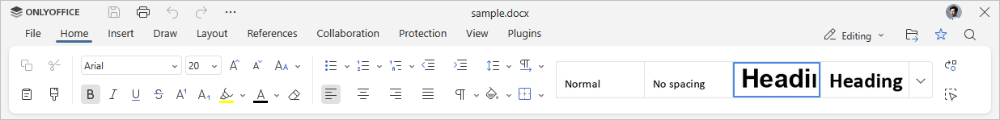
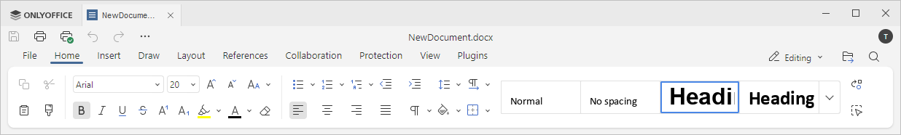

Kartica Početna
Kartica Početna se prikazuje podrazumevano kada otvorite Uređivač dokumenata. Takođe omogućava formatiranje fontova i paragrafa.
Odgovarajući prozor u Online Uređivaču dokumenata:

Odgovarajući prozor u Desktop Uređivaču dokumenata:

Pomoću ove kartice možete:
- podesiti tip, veličinu i boju fonta,
- primeniti stilove ukrašavanja fonta,
- odabrati boju pozadine za paragraf,
- kreirati liste sa znakovima i brojevima,
- promeniti uvlačenje paragrafa,
- podesiti razmak između linija u paragrafu,
- poravnati tekst u paragrafu,
- promeniti pravac teksta,
- prikazati/sakriti neštampajuće karaktere,
- dodati i prilagoditi ivice,
- kopirati/obrisati formatiranje teksta,
- upravljati stilovima.